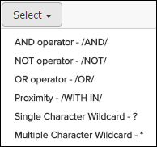
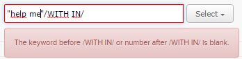

For many publication types, Pinpoint offers search operator and wildcard support in a Select button next to the full text search field:

These options help the user to correctly insert and use search operators and wildcards in the search field. If the search syntax is not correct it will be indicated by a red line around the search field and a tooltip explaining the problem. In the example below, a number is missing to the right of the /WITHIN/ operator.

| Operator/Wildcard | Description | Example |
|---|---|---|
| AND operator - /AND/ | Use the /AND/ operator in a search request to connect two expressions you want to find in a document. |
apple /AND/ pear will find documents that contain both "apple" and "pear" |
| NOT operator - /NOT/ | Use /NOT/ in front of any search expression to reverse its meaning. This allows you to exclude documents from a search. |
apple /NOT/ pear will find documents that contain "apple" and not "pear" |
| OR Operator - /OR/ | Use the /OR/ operator in a search request to connect two expressions, at least one of which you want to find in a document. |
apple /OR/ pear will find either "apple" or "pear" |
| Proximity - /WITHIN/ | Use the /WITHIN/ operator to find words that are within a a specific distance away from each other. |
"energy materials"/WITH IN/4 will find documents that have "energy" and "materials" within 4 words away from each other |
| Single Character Wildcard - ? | Use the ? to search for terms that match that with the single character replaced. |
te?t will find both "test" and "text" |
| Multiple Character Wildcard - * | Use the * to search for 0 or more characters. You can also use the wildcard searches in the middle of a term |
test* will find "test", "tests" or "tester" |